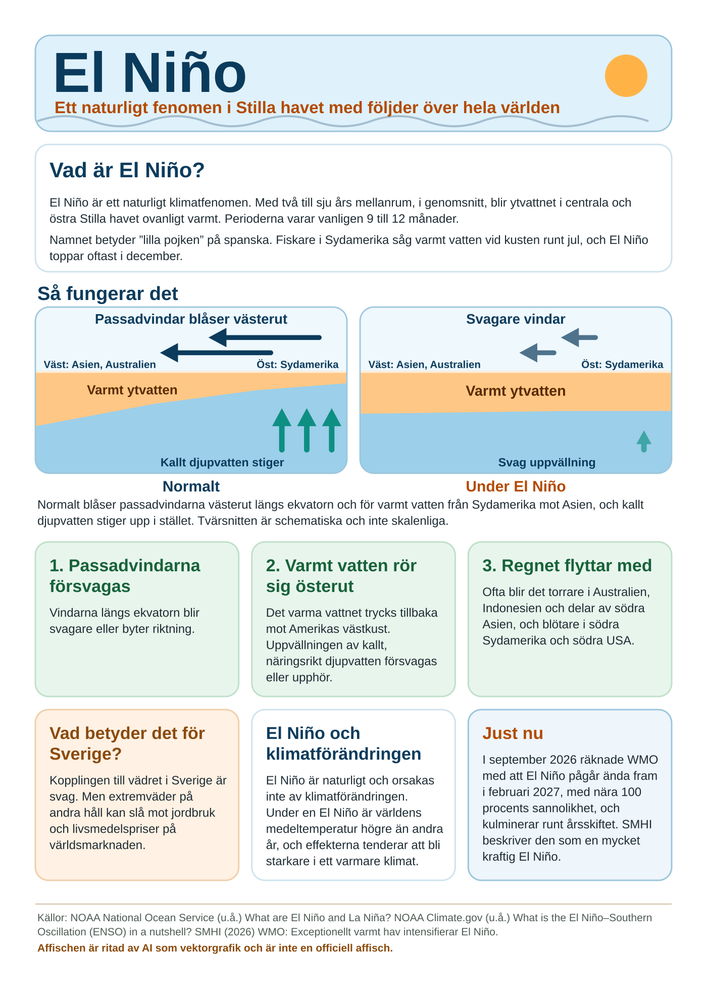

AI i en miljöorganisation
Förslag och analys på eget initiativ, inte beslutat av Lunds Naturskyddsförening eller Naturskyddsföreningen. Siffrorna är hämtade ur källorna och inte kvalitetssäkrade. Kontrollera mot källan innan något återges.
Den här sidan sammanställer vad som är känt om hur mycket energi och vatten generativ AI använder, vilka andra miljöfaktorer som finns och hur man kan se på bilder som AI har tagit fram. Den vänder sig både till dem som vill använda AI och till dem som är skeptiska. Varje siffra har en källa och en markering av om den är mätt, uppskattad eller antagen.
Två frågor, två korta svar
Frågorna kom ur en diskussion i en styrelse (se Bakgrund och användning). Svaren är korta. Fördjupningarna och källorna finns bakom länkarna.
Går det åt mycket el och vatten?
Per fråga är det litet. En textfråga motsvarar i en mikrovågsugn på 1 000 W, och en genererad bild . Vattnet vid datacentret är bråkdelar av en milliliter per textfråga, , men det största vattnet förbrukas där elen produceras. Ett helt arbete är en annan sak: bedömningen är , motsvarande i mikron, med osäkerhet uppåt. Totalt använde datacentren av världens el 2024, och ökningen är cirka per år.
Vad gör vi med bilder som AI har tagit fram?

Förslag 3: AI-ritad affisch, A4Energin är inte det som avgör. En bild motsvarar i mätningen i mikron. Det som väcker reaktioner är i underlaget mest förtroende och äkthet: i en analys av bilder gällde bara av kommentarer själva saken, enligt , och märkning som AI-genererad var nödvändig men räckte sällan. I ett experiment straffades ideella organisationer hårdare än företag. Bedömning: troligen extra känsligt för en miljöorganisation, men underlaget är indirekt och gäller mest hjälporganisationer. Frågan gällde också form, om en AI-layout är ungdomlig eller för grällt, och det mäter underlaget inte.
Bilder och förtroende · De tre affischerna · Skriv ut affisch 3
Så läser du sidan
Varje svår fråga presenteras i två steg: först en kort, faktamässigt korrekt version, och sedan en fullständig analys att klicka vidare till. Börja med de två svaren ovan, eller i analysen i korthet (energi och vatten) eller Bilder och förtroende (bilder).
Sidorna
- Analysen i korthetEnergi, vatten, övriga miljöfaktorer och vad ett arbete är, i kort form.
- Bilder och förtroendeVad underlaget säger om reaktioner på AI-bilder: äkthet, märkning och naturbilders riktighet, med tre affischer att förstora och skriva ut.
- AI i proportionVar ligger AI bland de frågor människor oroar sig för och lider av? Mått från Ipsos, FN, Världsbanken, WMO och WEF, och en rangordning att göra själv.
- Hot från agentisk AITio hot som återkommer i flest källor, från säkerhetsrapporter, forskning och utvecklarnas ramverk, och en rangordning att göra själv: vilket är värst?
- Vatten i detaljUttag, förbrukning, kylmetoder och en jämförelse med kärnkraft.
- Övriga miljöfaktorer och graderingHårdvara, avfall, elnät och en egen bedömning av vad som väger tyngst.
- Vad är en fråga, och vad är ett arbete?Definitionerna X, Y och Z, och en uppmätt session.
- Min förbrukningKontextfönstret, tokens in och ut, energi och pengar: i ett abonnemang och med API-betalning.
- Bakgrund och användningVarför sidan finns, vad den inte är och en logg över hur den har använts.
- Källor och loggKällförteckning, verifieringslogg, förbättringsregister och antagandelogg.
Status
Den här versionen innehåller analysen av resursanvändningen, en genomgång av underlaget om AI-bilder, tre affischer om El Niño och en jämförelse av AI med världens andra frågor. Ett förslag till förhållningssätt (principer, ett trafikljus för användning, en riktlinje för bilder, checklista och vanliga frågor) kommer i en senare version. Se vad som förbättras i kommande versioner och versionsloggen.